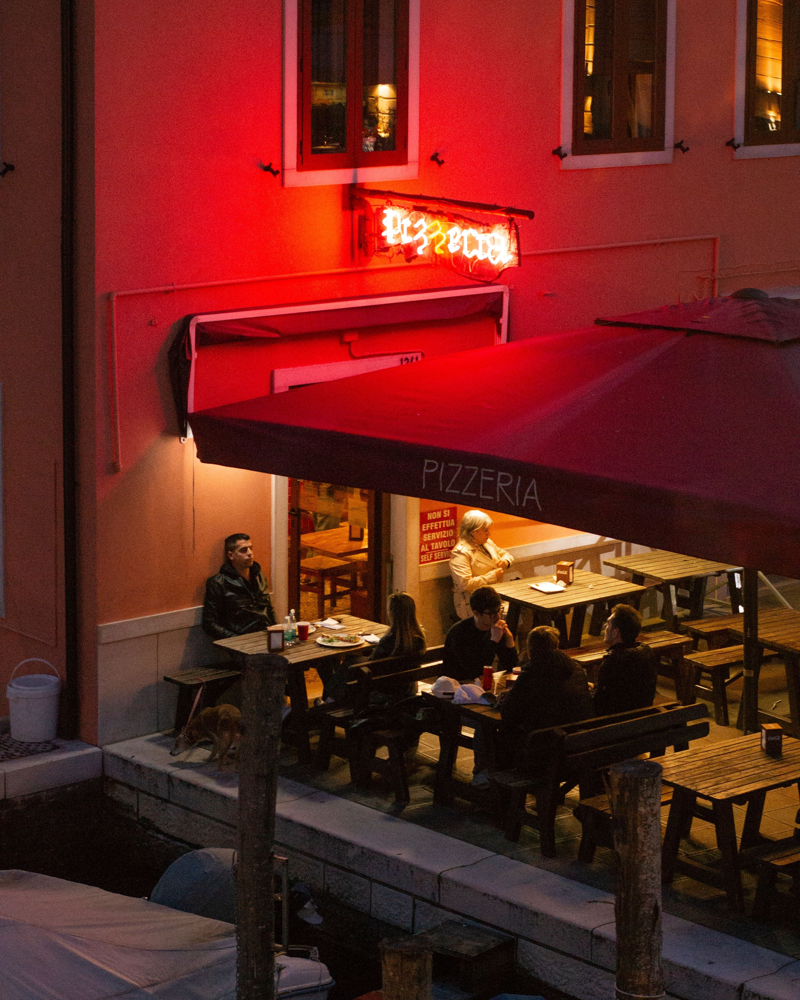

O nas
Naša zgodba
Zgodba pizzerije L'Antica Pirano se je rodila iz globoke ljubezni do dveh stvari: brezčasne lepote starodavnega Pirana in preproste popolnosti pristne neapolitanske pice. Navdihnjeni z beneško arhitekturo mesta, vonjem po soli in šumenjem valov ob piranskem obzidju, smo želeli ustvariti prostor, kjer se čas za trenutek ustavi. Naš cilj je bil prinesti duh starih italijanskih pizzerij na slovensko obalo in ga preplesti z avtentičnim mediteranskim ambientom, ki očara vsakega obiskovalca.
V osrčju naše filozofije je spoštovanje do tradicije in naravnih procesov. Verjamemo, da si vrhunska pica vzame čas, zato naše testo pripravljamo po starodavnih recepturah ter ga pustimo počasi in naravno vzhajati več kot 48 ur. Ko doseže popolno lahkotnost, ga ročno oblikujemo in spečemo v razžarjeni krušni peči pri temperaturi blizu 500 stopinj Celzija. Rezultat je tisti prepoznaven, mehak in zračni rob z značilnimi hrustljavimi pikami, ki je zaščitni znak prave neapolitanske peke.
A tisto, kar L'Antica Pirano dela zares unikatno, je drzen preplet italijanske strasti in lokalnega istrskega značaja. Vrhunske italijanske sestavine, kot sta paradižnik San Marzano in bivolja mocarela, ponosno združujemo z zakladi slovenske obale – od divjih špargljev in istrskega pršuta do kapljic vrhunskega oljčnega olja and nepogrešljive piranske soli. Vsaka pica, ki zapusti našo peč, je poklon preteklosti in ljubezni do kulinarike, postrežena z nasmehom in pristno obmorsko gostoljubnostjo.

Delovni čas
| Dan | Čas |
|---|---|
| Ponedeljek | Zaprto |
| Torek | 12:00 - 23:00 |
| Sreda | 12:00 - 23:00 |
| Četrtek | 12:00 - 23:00 |
| Petek | 12:00 - 23:00 |
| Sobota | 12:00 - 23:00 |
| Nedelja | 12:00 - 23:00 |
Lokacija
Pizzeria L'Antica Pirano
Tartinijev trg 1 6330 Piran Slovenija
View Larger Map